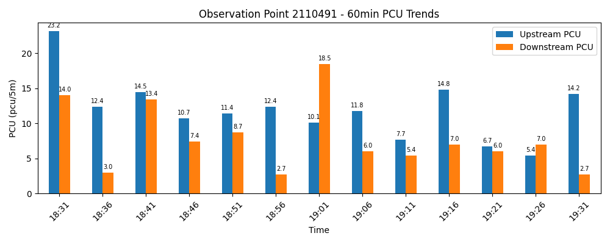
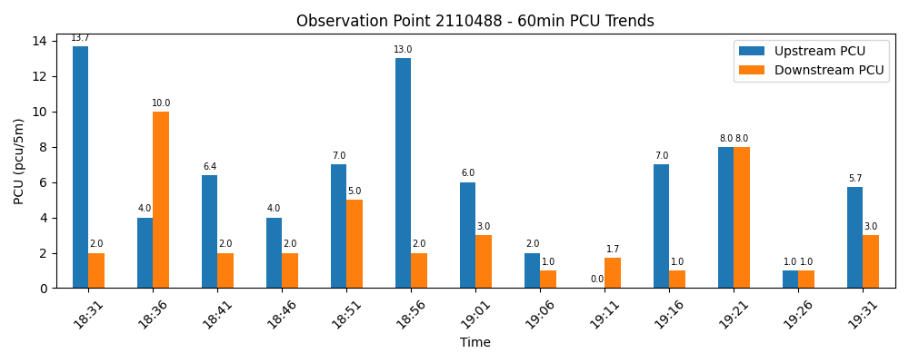

<!DOCTYPE html>
<html>
<head>
    
    <meta http-equiv="content-type" content="text/html; charset=UTF-8" />
    <script src="https://cdn.jsdelivr.net/npm/leaflet@1.9.3/dist/leaflet.js"></script>
    <script src="https://code.jquery.com/jquery-3.7.1.min.js"></script>
    <script src="https://cdn.jsdelivr.net/npm/bootstrap@5.2.2/dist/js/bootstrap.bundle.min.js"></script>
    <script src="https://cdnjs.cloudflare.com/ajax/libs/Leaflet.awesome-markers/2.0.2/leaflet.awesome-markers.js"></script>
    <link rel="stylesheet" href="https://cdn.jsdelivr.net/npm/leaflet@1.9.3/dist/leaflet.css"/>
    <link rel="stylesheet" href="https://cdn.jsdelivr.net/npm/bootstrap@5.2.2/dist/css/bootstrap.min.css"/>
    <link rel="stylesheet" href="https://netdna.bootstrapcdn.com/bootstrap/3.0.0/css/bootstrap-glyphicons.css"/>
    <link rel="stylesheet" href="https://cdn.jsdelivr.net/npm/@fortawesome/fontawesome-free@6.2.0/css/all.min.css"/>
    <link rel="stylesheet" href="https://cdnjs.cloudflare.com/ajax/libs/Leaflet.awesome-markers/2.0.2/leaflet.awesome-markers.css"/>
    <link rel="stylesheet" href="https://cdn.jsdelivr.net/gh/python-visualization/folium/folium/templates/leaflet.awesome.rotate.min.css"/>
    
            <meta name="viewport" content="width=device-width,
                initial-scale=1.0, maximum-scale=1.0, user-scalable=no" />
            <style>
                #map_f728e43bbbcdd2bd0b3c8ef6c211f4ae {
                    position: relative;
                    width: 100.0%;
                    height: 100.0%;
                    left: 0.0%;
                    top: 0.0%;
                }
                .leaflet-container { font-size: 1rem; }
            </style>

            <style>html, body {
                width: 100%;
                height: 100%;
                margin: 0;
                padding: 0;
            }
            </style>

            <style>#map {
                position:absolute;
                top:0;
                bottom:0;
                right:0;
                left:0;
                }
            </style>

            <script>
                L_NO_TOUCH = false;
                L_DISABLE_3D = false;
            </script>

        
</head>
<body>
    
    
            <div class="folium-map" id="map_f728e43bbbcdd2bd0b3c8ef6c211f4ae" ></div>
        
</body>
<script>
    
    
            var map_f728e43bbbcdd2bd0b3c8ef6c211f4ae = L.map(
                "map_f728e43bbbcdd2bd0b3c8ef6c211f4ae",
                {
                    center: [38.518722765, 139.9859583],
                    crs: L.CRS.EPSG3857,
                    ...{
  "zoom": 13,
  "zoomControl": true,
  "preferCanvas": false,
}

                }
            );

            

        
    
            var tile_layer_411e1eb449896fe4d27eda8dc6cb5457 = L.tileLayer(
                "https://tile.openstreetmap.org/{z}/{x}/{y}.png",
                {
  "minZoom": 0,
  "maxZoom": 19,
  "maxNativeZoom": 19,
  "noWrap": false,
  "attribution": "\u0026copy; \u003ca href=\"https://www.openstreetmap.org/copyright\"\u003eOpenStreetMap\u003c/a\u003e contributors",
  "subdomains": "abc",
  "detectRetina": false,
  "tms": false,
  "opacity": 1,
}

            );
        
    
            tile_layer_411e1eb449896fe4d27eda8dc6cb5457.addTo(map_f728e43bbbcdd2bd0b3c8ef6c211f4ae);
        
    
            var marker_69aa11ff045e526e13d0b3875ac7f867 = L.marker(
                [38.58079849, 139.9398136],
                {
}
            ).addTo(map_f728e43bbbcdd2bd0b3c8ef6c211f4ae);
        
    
            var icon_8dfc96a740705d5bfc7523b971fe1b85 = L.AwesomeMarkers.icon(
                {
  "markerColor": "blue",
  "iconColor": "white",
  "icon": "info-sign",
  "prefix": "glyphicon",
  "extraClasses": "fa-rotate-0",
}
            );
        
    
        var popup_d815f17646b85a7acb9d6ed802887eba = L.popup({
  "maxWidth": 450,
});

        
            
                var html_888a6806d7250d1feac246968845416f = $(`<div id="html_888a6806d7250d1feac246968845416f" style="width: 100.0%; height: 100.0%;">         <h4>地点コード: 2110491</h4>         <p>更新時刻: 2026-07-01 19:31</p>         <p><b>上り:</b> 14.2 pcu/5m<br><b>下り:</b> 2.7 pcu/5m</p>                  </div>`)[0];
                popup_d815f17646b85a7acb9d6ed802887eba.setContent(html_888a6806d7250d1feac246968845416f);
            
        

        marker_69aa11ff045e526e13d0b3875ac7f867.bindPopup(popup_d815f17646b85a7acb9d6ed802887eba)
        ;

        
    
    
            marker_69aa11ff045e526e13d0b3875ac7f867.bindTooltip(
                `<div>
                     地点 2110491 (上り:14.2 / 下り:2.7)
                 </div>`,
                {
  "sticky": true,
}
            );
        
    
                marker_69aa11ff045e526e13d0b3875ac7f867.setIcon(icon_8dfc96a740705d5bfc7523b971fe1b85);
            
    
            var marker_06e337447566b6271ea7d9dcc35c03c4 = L.marker(
                [38.45664704, 140.032103],
                {
}
            ).addTo(map_f728e43bbbcdd2bd0b3c8ef6c211f4ae);
        
    
            var icon_4560adb5312399f563b2838a86acecf5 = L.AwesomeMarkers.icon(
                {
  "markerColor": "blue",
  "iconColor": "white",
  "icon": "info-sign",
  "prefix": "glyphicon",
  "extraClasses": "fa-rotate-0",
}
            );
        
    
        var popup_3432855f5210c6e12744abfabb870546 = L.popup({
  "maxWidth": 450,
});

        
            
                var html_718188091d79acceadf4230e59944254 = $(`<div id="html_718188091d79acceadf4230e59944254" style="width: 100.0%; height: 100.0%;">         <h4>地点コード: 2110488</h4>         <p>更新時刻: 2026-07-01 19:31</p>         <p><b>上り:</b> 5.7 pcu/5m<br><b>下り:</b> 3.0 pcu/5m</p>                  </div>`)[0];
                popup_3432855f5210c6e12744abfabb870546.setContent(html_718188091d79acceadf4230e59944254);
            
        

        marker_06e337447566b6271ea7d9dcc35c03c4.bindPopup(popup_3432855f5210c6e12744abfabb870546)
        ;

        
    
    
            marker_06e337447566b6271ea7d9dcc35c03c4.bindTooltip(
                `<div>
                     地点 2110488 (上り:5.7 / 下り:3.0)
                 </div>`,
                {
  "sticky": true,
}
            );
        
    
                marker_06e337447566b6271ea7d9dcc35c03c4.setIcon(icon_4560adb5312399f563b2838a86acecf5);
            
</script>
</html>